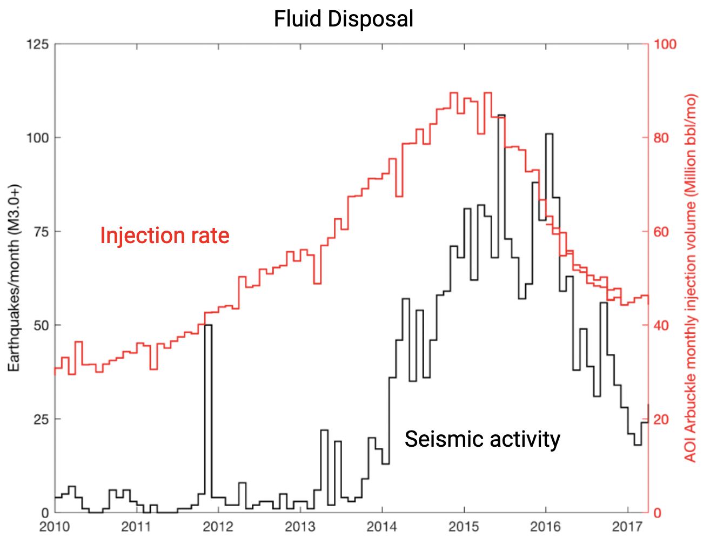
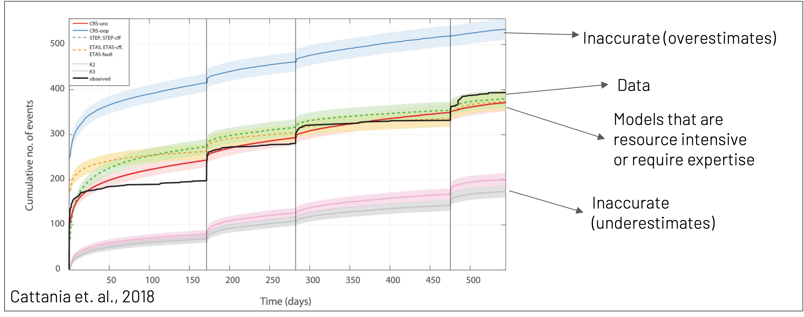
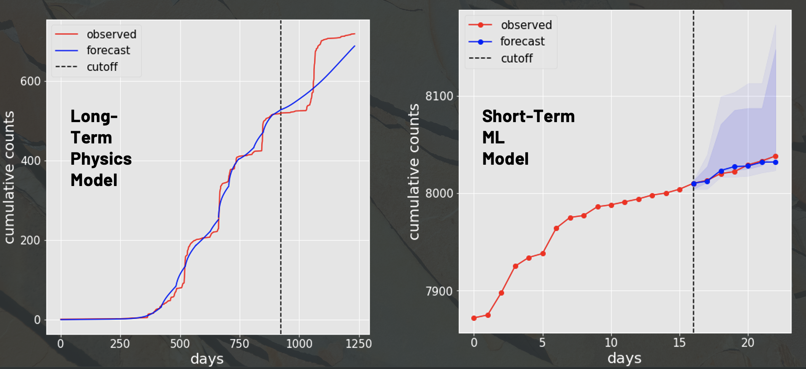

Geomechanics for CO\(_2\) Sequestration
- Researchers: Giuseppe Castiglione, Alexandre Chen, Akshay Suresh & Han Xiao
- Lead faculty: Kayla Kroll, Christopher Sherman & Constantin Weisser
- Live showcase: YouTube link
- Technical report: Pages 210–226 of PDF
- Machine learning (ML) ready induced seismicity datasets: Zenodo link
- Programming language: Python (numpy, pandas, matplotlib, PyTorch)
- Time series forecasting techniques: Long short-term memory (LSTM) network, SCINet (a state-of-the-art temporal convolutional network developed by Liu, M. et al., NeurIPS 2022)
Team accomplishments:
- Reduced modeling time from a whopping 22 hours to just 3 minutes on a tablet by implementing numerical computing best practices, dimensionality reduction strategies, and efficient optimizers.
- Lowered the entry barrier for code operation from an estimated pool of about 10,000 seismology PhD holders to over 5 million people with basic computing skills.
- 🌟 Awarded the FDL 2022 “Most Useful Contribution” title in recognition of the team’s invaluable contributions for humanity.
Personal contributions to team success:
- Transformed raw data into clean ML-ready labeled data products for supervised learning.
- Built an LSTM model to enable \(70 - 90\%\) accurate short-term seismicity forecasts, complementing the long-range forecasting capabilities of our physics-based model.
- Organized virtual board game sessions to facilitate team building amidst an intense 8-week research sprint (first 3 weeks in-person, next 5 weeks virtual).
The Challenge
Achieving the US goal of carbon neutrality by 2050 will require the storage of over 30 gigatons of CO\(_2\) across 30,000 carbon sequestration plants in the country. However, carbon capture and storage, like any other underground fluid injection process, carries the risk of artificially inducing earthquakes. A noteworthy historical example in this regard is Oklahoma, a US state which saw sparse seismic activity during 1974 – 2008. Continued underground wastewater disposal since then has sparked a significant surge in seismic activity across Oklahoma.

Observed lagged correlation between wastewater disposal rate (red) and the associated induced seismicity (black) in Oklahoma, USA. Data sources: Oklahoma Geological Survey & Oklahoma Corporation Commission.
Forecasts of induced seismicity are essential to permit bulk underground storage of CO\(_2\) with minimal seismic hazard. However, existing models of induced seismicity leave much to be desired. Some forecasting models, as evident from the blue, pink, and gray curves in the below figure, are highly inaccurate. Among the more accurate formulations, the physics-based Coupled Coulomb Rate-State (CRS) models are highly site-specific, prohibitively slow, and extremely resource-intensive — requiring supercomputers to train. Further, operation of these models demands significant domain knowledge at the level of a seismology PhD candidate, which limits their utility to a general operator at a CO\(_2\) sequestration plant.

Time series of cumulative earthquake counts (black) observed in Canterbury, New Zealand between 2010 – 2012. Vertical lines label main quakes with magnitudes exceeding 5.9. Colored curves correspond to various models that have been fit to the data. Shaded areas around colored curves denote Poisson errors on forecasted earthquake counts. Reference: Cattania et al. (2018).
Altogether, equipping CRS models with enhanced speed and accessibility can go a long way towards enabling rapid, accurate induced seismicity forecasts for safe carbon sequestration.
What does a CRS model take as input? Spatiotemporal grids of subsurface fluid pore pressure and pressurization rate. These grids are computed using knowledge of the spatial distribution of injection wells and time series of fluid injection volume rates at each well.
What does a CRS model output? Time series of cumulative earthquake counts in a specific locality or region of space. Precise locations of earthquake epicenters are not predicted.
| Location (USA) | Area covered by earthquakes | No. of injection wells | Assumed no. of causally connected earthquake clusters | Cause of induced earthquakes |
|---|---|---|---|---|
| Decatur, Illinois | 4 km \(\times\) 5 km | 1 | 1 | Subsurface CO\(_2\) injection |
| Cushing, Oklahoma | 4 km \(\times\) 6 km | 1 | 1 | Underground wastewater disposal |
| Kansas | 60 km \(\times\) 45 km | 102 | 8 | Underground wastewater disposal |
For every cluster in each location, we generated separate pressure and earthquake catalogs.
Pressure catalog: epoch, fluid pore pressure at seismicity centroid, pressurization rate at seismicity centroud
Seismic catalog: epoch, northing, easting, depth, latitude, longitude, magnitude
We encourage interested readers to consult our technical report (see note near the top of this page) for references to data sources behind every catalog.
The Road to a Streamlined CRS Model
- Speed gain: We successfully lowered model training time from a whopping 22 hours on a supercomputer to a mere 3 minutes on a tablet through the following improvements.
- Implemented code vectorization in PyTorch for model speedup. Original CRS model was written in Python.
- Reduced search space dimensionality by grouping redundant parameters in equations governing the CRS model.
- Introduced the Adam optimizer from ML to navigate a smooth multi-dimensional loss landscape for model training. Original model used a slow grid search for parameter optimization.
- Accuracy enhancement: Integrated ML techniques (LSTM, SCINet) with our physics-based CRS model to build reliable forecasts across diverse horizon lengths. 
Long-range (blue curve in left panel) and short-range forecasts (blue curve in right panel) from our streamlined CRS model with ML enhancements. Red curves in both panels denote the data. The vertical dotted lines in both panels demarcate the boundaries between our training data to the left and our validation data to the right.
- Accessibility upgrade: Users of our streamlined CRS implementation now only need to understand basic signal processing, some elementary statistics, and the concept of model fitting. Domain knowledge in seismology is no longer a prerequisite for model operation.
Quantifying model gains: \[ \frac{{\rm No. \ of \ CO_2 \ sequestration \ sites} \times {\rm Model \ training \ time} }{\rm Time \ between \ runs} = {\rm No. \ of \ operators \ required} \]
Original CRS model (not scalable): \[ \frac{{\rm 30,000 } \times {\rm 1 \ day} }{\rm 5 \ days } = {\rm 6,000 \ analysts \ from \ a \ pool \ of \ 10,000 \ seismiology \ PhDs} \] This would require restructuring the academic seismological community to do repetitive tasks and stop working on other pressing issues. Also, achieving safety with forecasts would be expensive.
Streamlined CRS model: \[ \frac{{\rm 30,000 } \times {\rm (1/10) \ day} }{\rm 5 \ days } = {\rm 600 \ individuals\ with \ basic \ computing \ skills \ (feasible)} \]
Note:
- In the above calculations, we asummed a gap of 5 days between successive model runs.
- Though our streamlined CRS implementation comes with a training time of only 3 minutes, we assumed a generous modeling time of about 2 hours to account for any hardware setup that may be needed before runs.